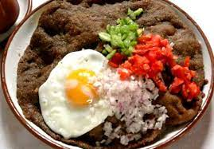
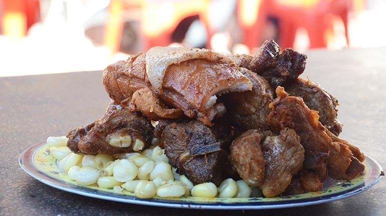
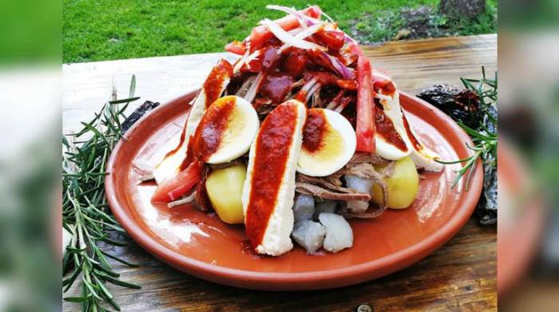

Gastronomia
|  Silpancho Cochabamba - Bolivia El sillpancho, o silpancho es un plato típico de la cocina boliviana, particularmente del departamento de Cochabamba, donde es considerado una de sus preparaciones más representativas. |
|---|
|  Chicharron Cochabamba - Bolivia El chicharrón es una comida que en algunos países se obtiene tras derretir la grasa del cerdo, en otros se usa la grasa del cerdo para cocinar la carne y en otros consiste en una fritura de la piel del cerdo con o sin carne. |
|  Chajchu La paz - Bolivia El CHAJCHU es una receta muy peculiar de la paz, muy rica por sus ingredientes y sabor, lo recomendamos preparar. El Chajchu es un plato con ingredientes muy fuertes que se lelgaba a servir en jornadas duras de trabajo. |